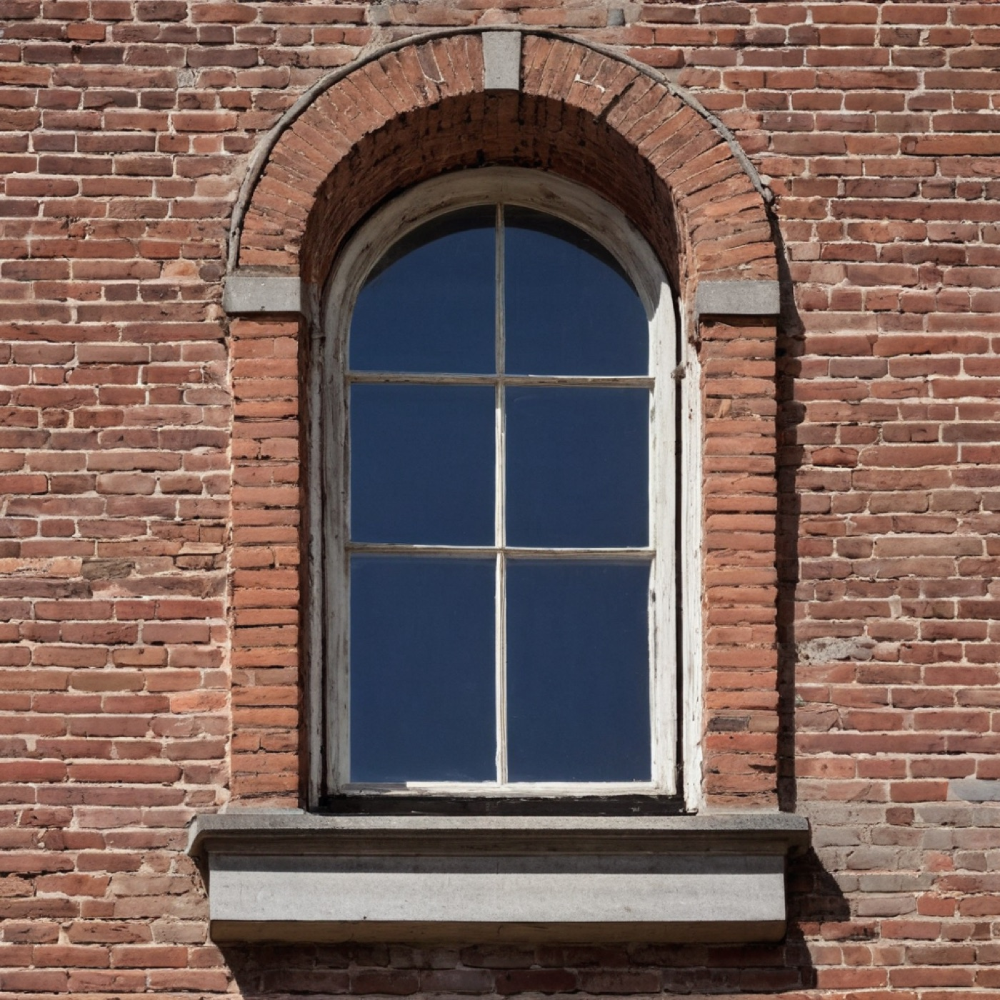
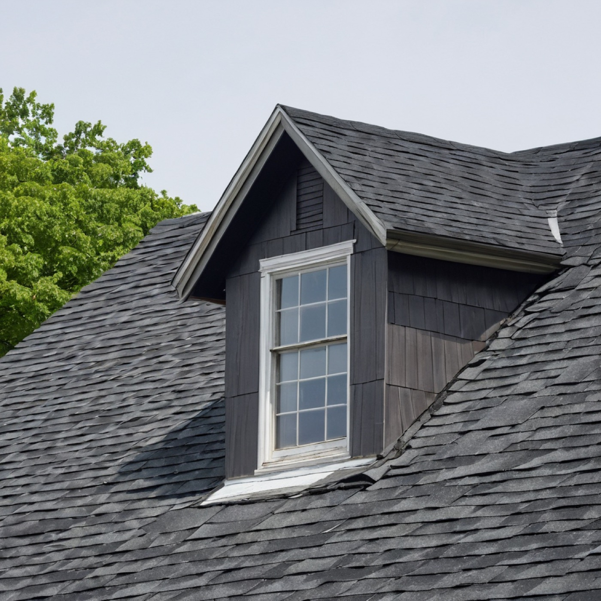
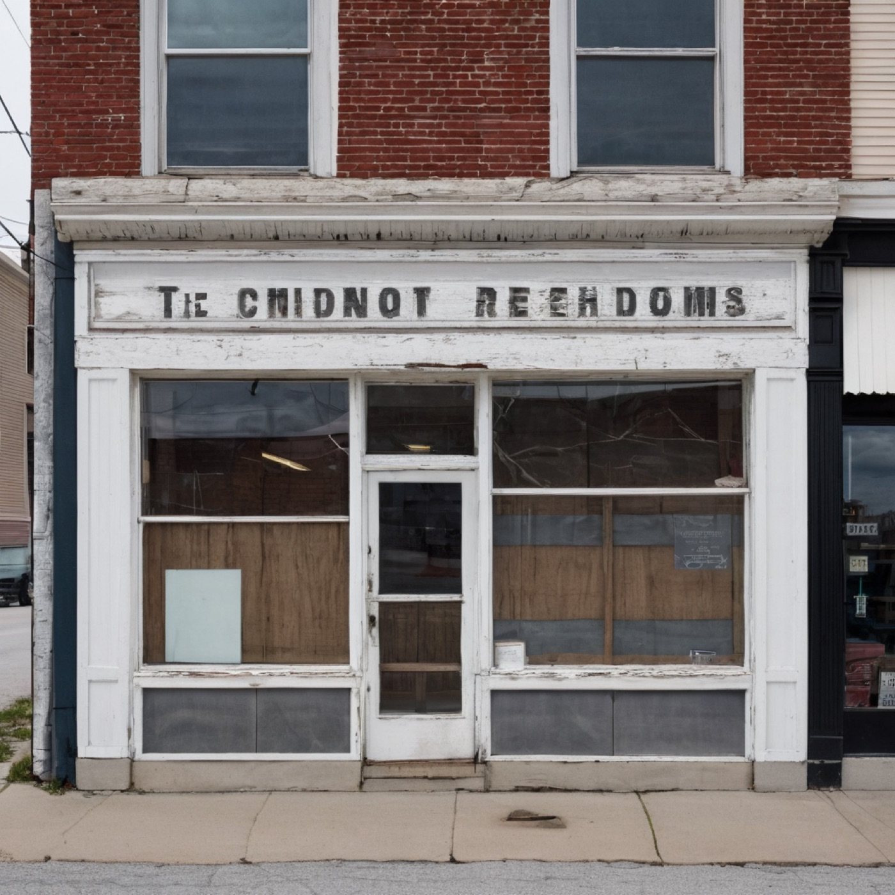
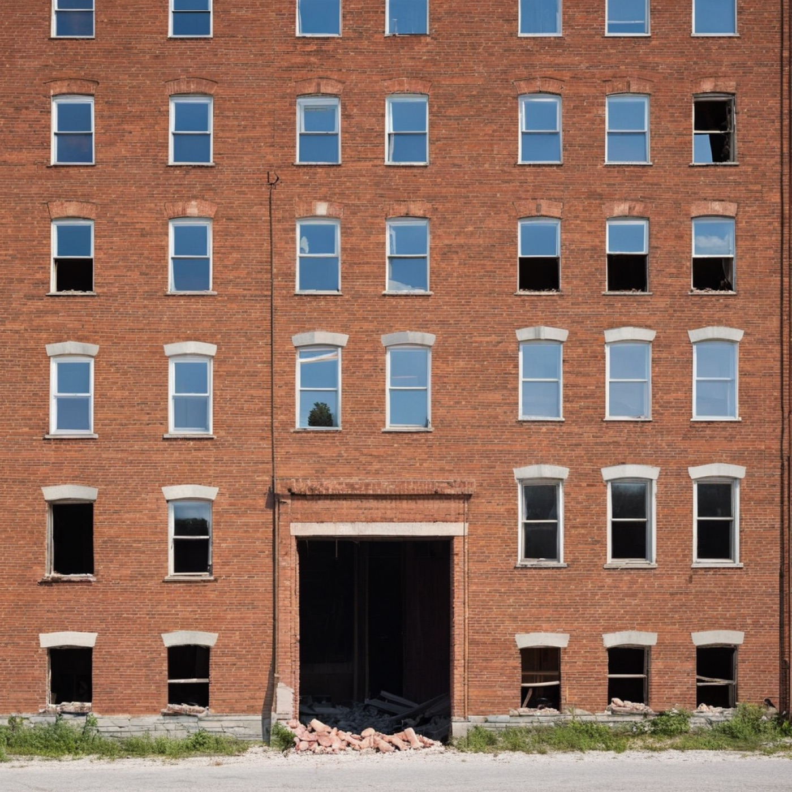
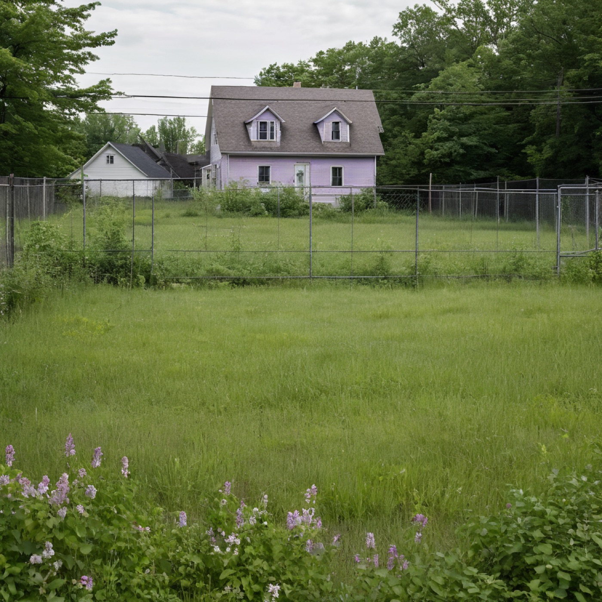
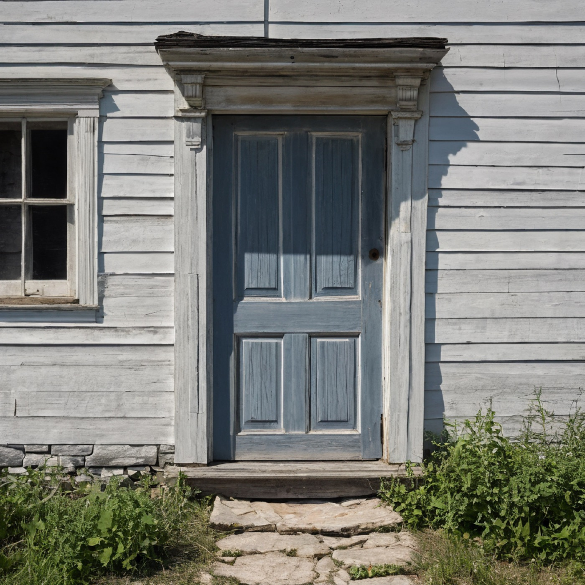

"I do not know what the binder is for, exactly. But I have used it. When a developer comes in and tells you a building has always looked the way it looks, you can sometimes reach behind you and disagree with him." — from the letter to W., on the methods of the office.

№ 014The header arch is still there. The infill is two shades short of the original course; in seventy years it will catch up. Maybe.

№ 071The roof line is straighter than the building wants it to be. That straightness is a ghost. Photograph in raking light.

№ 102A facade that used to be a face. The painted name above the door is the only thing that hasn't been corrected.

№ 153The most honest wall on the block now, because nobody chose any of it. Cf. the cabinet of unannounced facades.

№ 188The grass darker over the old footings. Two lilac shrubs at the lot edges that will outlast everything we build to replace them.

№ 211A door that has been carefully unsaid. The threshold remains because nobody had the heart to remove it.